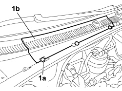
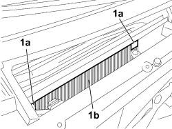

5010B08 CLIMATE CONTROL OUTSIDE AIR PURIFYING (POLLEN) FILTER - R.R.
- Path
- Procedures > 50 AUXILIARY UNITS > 5010 CLIMATE CONTROL - MISCELLANEOUS > 5010B CLIMATE CONTROL AIR PIPES AND DUCTS > 5010B08 CLIMATE CONTROL OUTSIDE AIR PURIFYING (POLLEN) FILTER - R.R.
- Kind
- repair procedure (removal / refitting; the operation number is the code)
- Applies to
- all engines; all production periods
- Interactive page
- https://sloeber94.github.io/elrnDB-fCrm/en/#/194000577
Applies to: all engines; all production periods
 Removing
Removing
 Refitting
Refitting- Open the bonnet.
1. Using the special tool, release the fixing buttons (1a) and remove the covers (1b) for the windscreen base trim.

Applies to: all engines; all production periods
1. Lift up the retaining tabs (1a) and release the pollen filter (1b) from its housing.

Applies to: all engines; all production periods
Refitting
Removing- Check that the pollen filter is not blocked; if it is, replace it with a new one.
- Place the pollen filter in position and attach the retaining tabs.
- Position the cover for the windscreen base trim and fit the securing buttons.
- Close the bonnet.